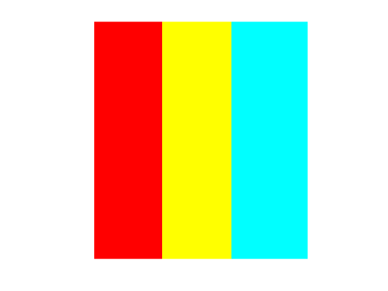
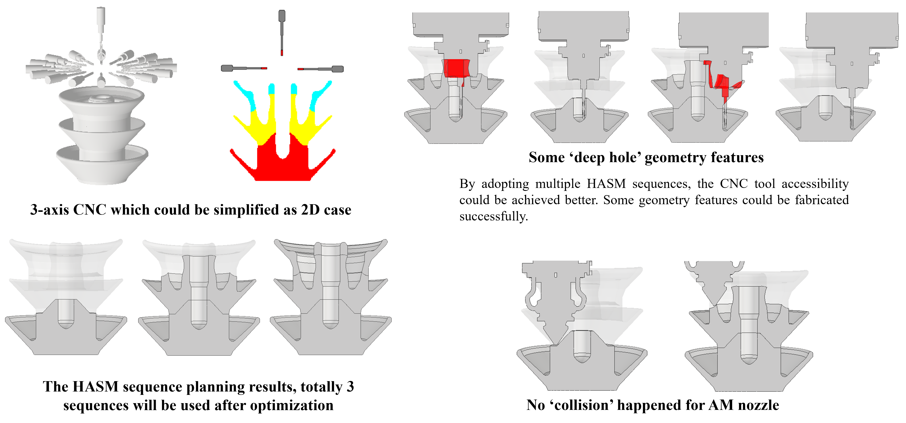
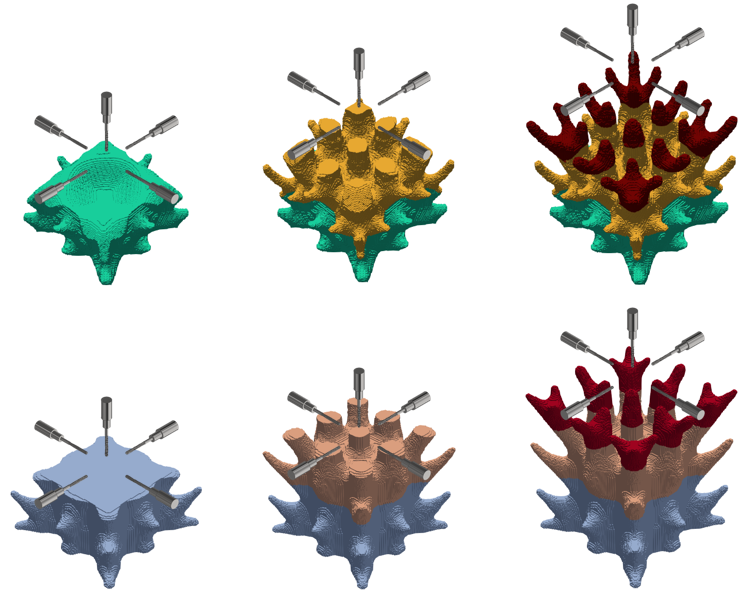
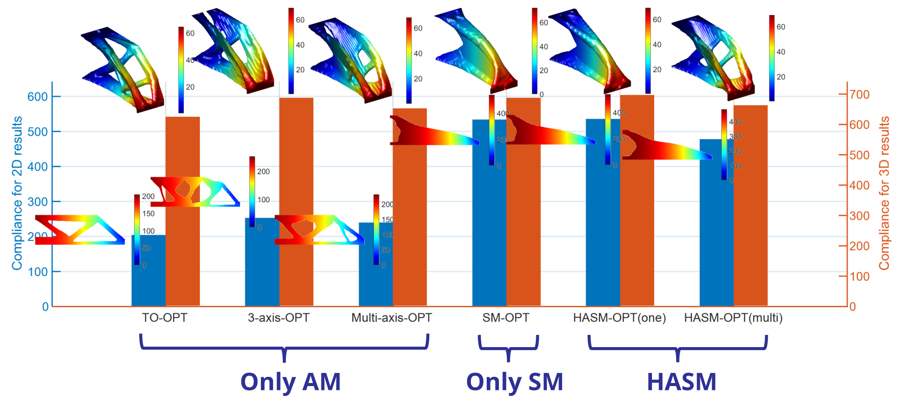

Two-Dimensional Example #1
2D heat sink design.
A differentiable and geometry-controlled framework for hybrid additive-subtractive manufacturing structural topology optimization design method.
Hybrid additive–subtractive manufacturing (HASM) is a revolutionary technique that, the interplay between additive and subtractive processes within an integrated machine tool allows for the fabrication of traditionally challenging complex geometries with excellent quality. However, part design for hybrid manufacturing has mostly been done by experts with rare support from computational design algorithms. Hence, the primary contribution of this work is to propose a solution for HASM-oriented structural topology optimization that incorporates both dynamic process planning and accessibility constraints. This novel optimization algorithm is developed under a unified SIMP and magic needle framework. Two sets of design variables are proposed: one for the topological description while the other for identifying the printing stage-related subdivisions. Accordingly, a series of additive manufacturing (AM) and subtractive manufacturing (SM) dedicated geometric constraints are developed based on these design variables to enable the cutting tool and laser head accessibility. Supported by the sensitivities, the structural geometry and fabrication fields can be simultaneously optimized. The effectiveness of the algorithm is proved through several numerical and experimental case studies. All the factors of cutting tool directions, HASM stages, and specific tool shapes are thorough investigated.
A cooperative optimization algorithm is proposed, primarily comprising the SM formulation, the AM formulation, and the HASM formulation.
By employing a convolution algorithm to embed the tool shape into the convolution kernel, the non-machinable regions of the structure are determined.
For the additive manufacturing component, we introduce the "geodesic-in-heat" concept and leverage multiphysics coupling to achieve a differentiable representation of multi-axis slicing for curved surfaces.
Finally, we propose the "Magic Needle" algorithm. By integrating this with prior surface slicing techniques, we achieve a differentiable representation of regions designated for additive and subtractive manufacturing steps, while also enabling the number of regions to be treated as a differentiable variable. This allows for the simultaneous optimization of partition locations and the number of manufacturing steps.

2D heat sink design.
2D heat sink design with another tool configuration.

The optimized results for 2D heat sink.

The optimized results for 3D heat sink

The fabrication process for the optimized 3D heat sink

In the ablation studies, we designed and compared the classic cantilever beam under various geometric constraints in both 2D and 3D settings.

Comparison of AM and HASM Processing for Plastic and Metal Materials.
Finally, the optimized 3D heat sink components were fabricated using both plastic and metal materials, and the results obtained via HASM were compared with those from AM alone. It is evident that our designs could be successfully fabricated using both HASM and AM; notably, the surface roughness of the components produced via HASM was significantly better controlled.
@article{xu2026geometry,
title = {Geometry-Driven Topology Optimization
with B-Spline Geometric Features},
author = {Xu, Shuzhi and Others},
journal = {Journal Name},
year = {2026}
}
This work was supported by Shandong University and The University of Osaka.